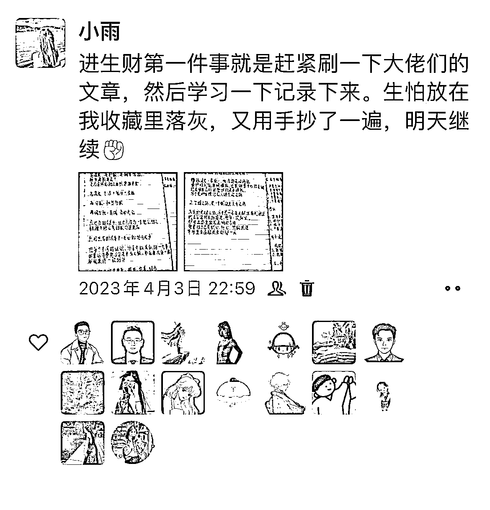
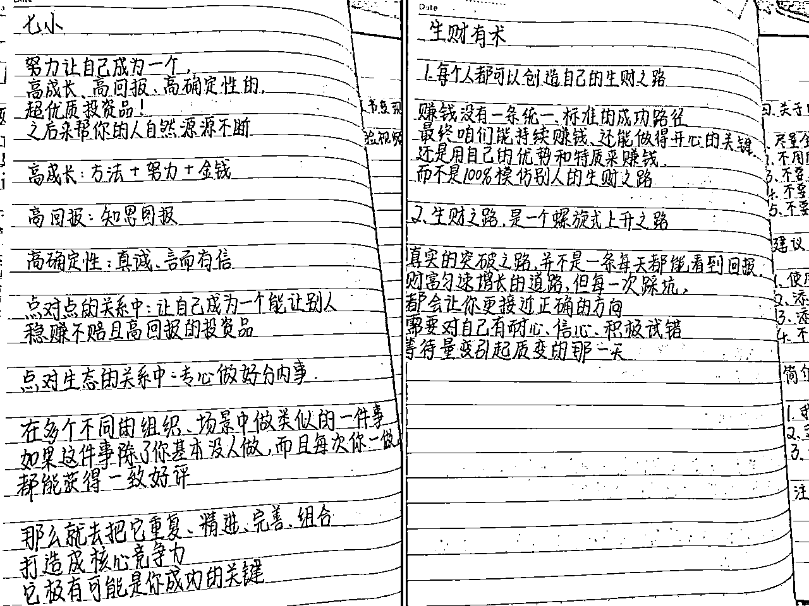
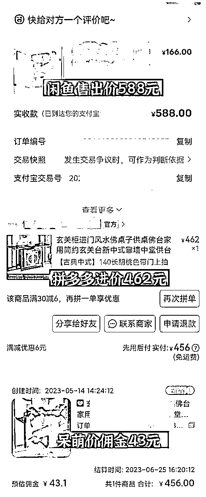
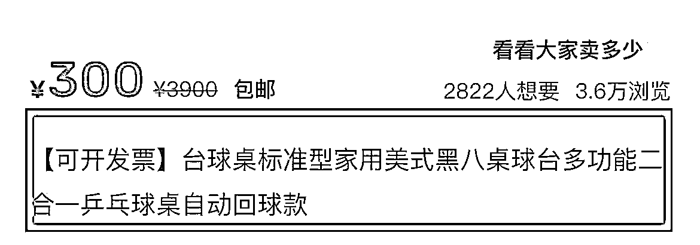
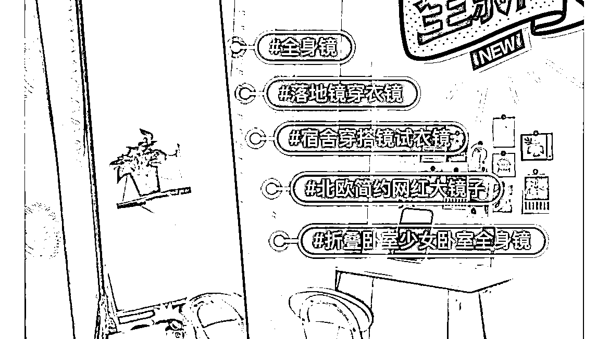
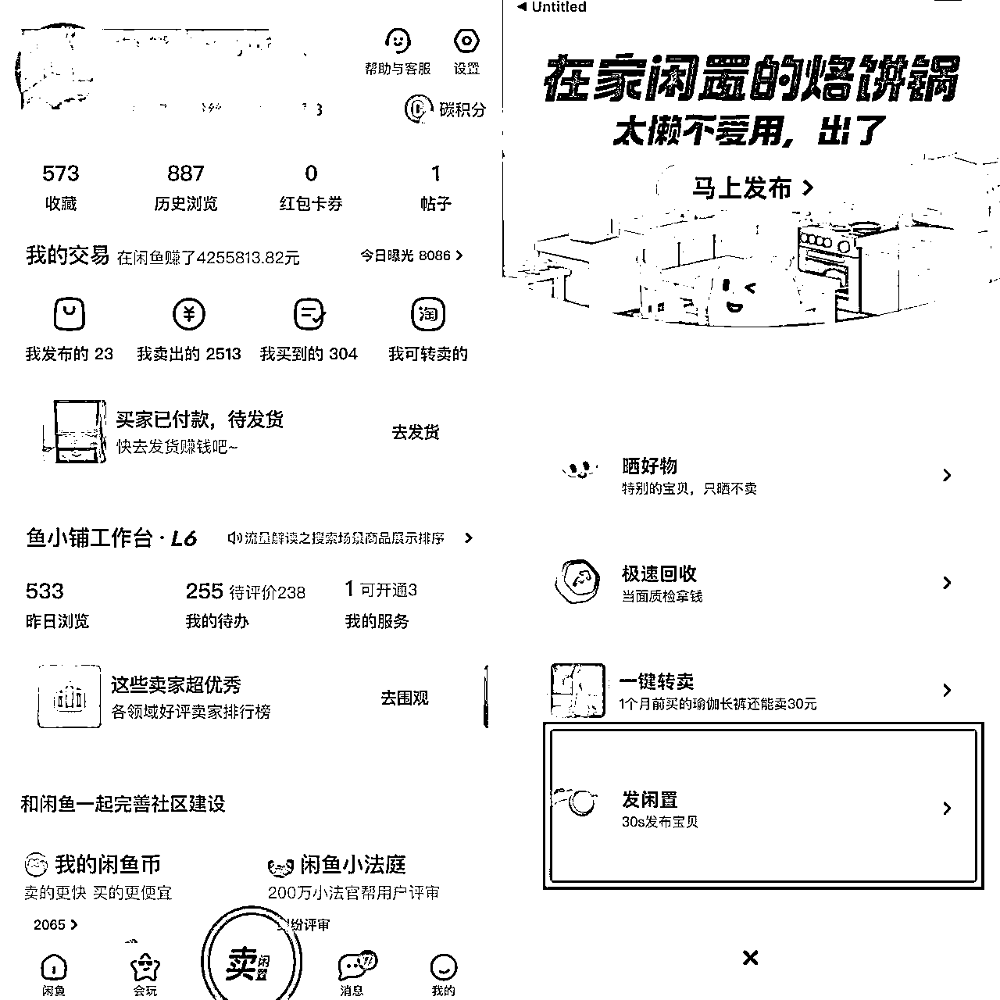

来源：https://d8ez8yi1x2.feishu.cn/docx/IvxAdd9udoDfSrx0YZjcRMnPn7g
目录
一、自我介绍
二、抑郁后遇上家暴男，黑暗里生活的光，居然是我的副业
➪初识兼职、暗自欢喜
➪初识闲鱼、找到希望
➪中途放弃、重拾信心
➪变态家暴男发疯，被迫踏上自媒体之路
迎着生活砸下的巨石向上爬，不受环境影响
2023年，闲鱼居然是我生命里的光
感谢芷蓝姐从一开始给我的方向定位，让我不在迷茫。感谢理白 对我的知无不言。每一次在我遇到卡点的时候都能给我不一样的思路
大家好，我是小雨，一个默默搞钱的19岁宝妈（这里不用惊讶我的年龄和宝妈这个身份，等会儿慢慢说）目前主要深耕闲鱼电商，做了4年闲鱼电商，小红书店铺花了三个月时间跑通
2018年加入四季优美微商，卖随便果，四季代餐，HHV眼膜，面膜，洗脸的
2019年上半年靠刷单，一单2-5块钱，攒够了做下一个项目的本金，然后开始做打字兼职，点赞类，淘宝客服等等
2019年下半年用前期做的副业攒够1万本金，去投资玩资金盘。每一个资金盘都是见好就收，什么抖音点赞，拼拼有礼，翻翻乐一共玩了十几个资金盘。靠资金盘赚了2万
2019年下半年资金盘全部翻盘以后，遇到闲鱼卖货。自己开始卖低客单价产品
2020年遇到闲鱼卖货团队，开始转型做高客单价产品
2021年一整年都在卖货，收入慢慢从几百到8000多，有的时候能做到1.2W左右。2021年7月被选为团队指导老师
2022年2月底开始做团队，跟各大几十万粉的博主合作训练营
2023年5月收入突破新高，收入5万。也是担任团队指导老师的第二年，自己的学员300多个。自己的小红书店铺也开始有起色
算起来，我是从15岁开始做各种副业。那个时候高中，我属于艺考生，挂读了。偶尔回去学校考试，一个月回一次家。所以根本没时间去上班，我也没必要去上班赚钱。我每个月的生活有好几千(父母离异，两头都要钱花。家人不在身边，我遇到了前任，他也经常给我钱用)所以从来没有赚钱的想法
第一个兼职是被我一个朋友死拉活拽做的，就交了点钱一起做。那是我第一次发现手机也能赚钱，第一次听说手机兼职几个字。进团队才发现她是靠拉人头赚钱。进都进了既来之则安之，做下去看吧。第一笔赚了十几块钱，当时可开心了，赚钱的感觉和父母给的的确不一样，我爱上了赚钱的成就感
后半段就是做客服打字之类的，一个月几百一两千。2020年开始做微商，在四季优美囤了1800块钱的货，卖四季代餐、随便果、面膜。由于性格内向，执行力也不好，迈不出第一步，微商也就不了了之
同年上半年，做网拍模特，把淘宝、得物、小红书的产品像真实买家一样买回来。拍视频拍照给好评，一单有15-60。也做过一单几百的，但是要求也高
前前后后换了很多很多副业，我也迷糊了，不知道是自己不适合做还是真的太笨。也被微商的朋友圈给刺激了，当时好几个做微商的人，豪车豪房的买。朋友圈不是在吃喝玩乐就是在消费几千几万，我的三观被刷新。想着再找到一个靠谱的副业就要坚持做下去
这点就跟很多很多互联网新手小白一样，刚接触互联网，看到形形色色的项目，不知道到底做哪个。互联网摸爬滚打的第一年，悟出了第一个道理：“少就是多，慢就是快”，互联网的项目不是说做得多就赚钱，拼的是谁能坚持下去。当时我知道四季优美这个微商团队能赚钱，但真正赚钱的都是坚持做下去的人。我们也不要急，一步一步来。相信会找到合适自己的项目，慢就是快
“少就是多，慢就是快”
后来跟前任在一起，已经彻底陷进去，走不出来了。也在这个时候发现已经怀孕了两个多月。2020年本该是我即将高考的一年，但怀孕的我根本不敢去体检。最终瞒着父母找到班主任，说我要放弃高考
我很爱学习，即使没读书在前任家里待着，我都每天会去学习。放弃高考对我而言等于放弃了一切，读书十几年最后连大学能不能考上都是未知
也有想过去把孩子打掉继续去高考，当时的自己还很无知，相信了前任的甜言蜜语。自己也感觉是一个生命不忍心去打掉，就想着等肚子慢慢大点再告诉父母。当时前任的确对我很好，父母本身就离异，缺爱的我遇到了一个对我这么好的人，我很幸福。现在想想活该自己后面过成这样，固执得一点都不听父母的
因为肚子不显怀，一直怀孕6个月都没人发现。怀孕快第7个月的时候我觉得瞒不住了才告诉家里人。家里人也没办法，拗不过我。只能我以后的日子我要怎么过就怎么过了，也不再给我生活费
断了经济来源以后，我想着出去找工作，但大着肚子去哪里也不方便。正在这时看见朋友圈了解到闲鱼卖货，知道要付费299元就可以进团队做，觉得真心的便宜。没有了父母的经济支撑，让我更想自己赚钱了。前任也是在我怀孕开始，一家子就天天在我面前抱怨没有钱。所以我毫不犹豫用微信最后的几百块钱去付费了
我15岁到17岁非常非常内向，怕说话怕跟别人打招呼，出门给车费都要在心里想十多遍才敢给(现在好很多了，做互联网后慢慢锻炼直播这些，不在那么内向)我就像看到了希望，下定决心一定要好好做出个成绩来。一定要让父母看到我是过得好的，也不让前任一家觉得我是靠他们家养着
付费以后就开始每天去看课程，做笔记，爬楼聊天记录。深夜都还在上架产品，学习。后来刷到了明白大佬的文章，让我领悟到的生财思维
赚钱，是结果，是做某件事情的结果。
只想着结果，而不考虑达成结果需要什么过程的人，是肯定赚不到钱的。
就好像，一个人想要长寿，但他并不做长寿的事情，比如饮食、锻炼、睡眠等。这个人怎么可能长寿。
所以，如果你想赚钱，应该想的是:我要做什么「事情」，才能让我赚钱
我把这篇文章看了好几遍，读懂后又去延伸思考。那我做闲鱼是不是也要这样？先不要想着赚钱，赚多少钱。而是去想想我应该怎么做，做什么“事情”才能让我赚钱。然后我就想明白了，我需要做的是把产品在3天上满50个产品。有了明确的目标，我很快在第三天上满了产品。也在第三天出单，直到现在，这个生财思维依旧是我一直去做的。像前段时间开了小红书店铺一样，也按照这种思维模式来
闲鱼卖货也终于做出了水花。第三天下午卖出了闲鱼第一单，赚了23元。第一个月赚了四位数，一千多还是两千块钱。在第五个月的时候靠闲鱼卖货月入一万多。我觉得我看到希望了，都开始在幻想存多少钱能给我妈他们买点什么
人就是这样，一看到点火苗以后就会更有动力去拾柴。通过闲鱼卖货赚到第一笔钱，后来每个月闲鱼卖货收入稳定的时候，我就看到了方向。有了目标和方向，就立马去上架优化产品，不敢有一丝懈怠。做＞想
“选择对了，有信念，有目标，就有希望有动力支撑自己。所有的焦虑源于自己想多做得少。”
生完孩子以后抑郁了一段时间，每天很烦躁，一个人带孩子。我很怕很怕疼，包括生孩子的时候打的麻醉对于我来说一点用都没有。生了孩子以后整个人更加不好，孩子一晚上醒几次我就得起来几次。要喂奶，奶不够了要起来泡奶粉。每当我想起带孩子的场景，就是每天睡不够的时候半夜醒过来，看着床头的夜灯和暗暗发昏的房间。有好几次睁开眼睛，我看到满床的头发把我女儿全身缠住。我急得赶紧去拿，过个几秒钟才看见什么都没有
第一次当新手妈妈的我，没有任何人帮我一把，没有人告诉我要怎么带。带孩子本身就很累了，家里面几个人还几种意见。每个人都觉得我带得不好，指责我，说我。永远都用孩子饿了孩子冷了来刺痛我，我的脾气性格也变得越来越暴躁
有的时候顾客来咨询我都会没耐心，最后没坚持下来，去做了放单主持。放单主持很赚钱，我谈到了好几个淘宝商家。有的时候一天能赚700多，一两千块钱。眼睛也天天盯着手机，从早到晚背着孩子去做，去医院检查角膜炎这些。腰也天天背孩子背得很疼，到现在腰都会经常疼
我也迷茫了，我知道互联网的项目很多。可是不知道到底哪一条是我能一直走下去的，就在坚持不下去，想要放弃互联网项目的时候。看到群里学员晒单，有几个是我之前做放单主持认识的人，也在每天晒单，我被刺激到了
也是在这时我看到花爷2020年5月份发的一篇分享，那是我第一次看到价值流通，跨越圈层，信息差这几个字。花爷说得太好了，对普通人而言，没钱没权，第一桶金大多是靠信息差获利来积累的。这不说的就是我吗，我互联网的第一桶金正是利用信息差获得的。我第一次在互联网做到月入1000，慢慢的累积到10000。不就是靠的闲鱼卖货赚信息差吗，而我却要把它放弃。花爷的这篇分享犹如久旱逢甘露，影响到我，让我一下子又有信心做下去了
对普通人而言，没钱没权，第一桶金大多是靠信息差获利来积累的
坚持就是有意义的，我的坚持也得到了正反馈:2021年一整年都在专心卖货。做到过靠闲鱼卖货日入五位数，每天订单多到九宫格放不下，并且都是一单三四位数的利润。三四千元利润的订单前前后后卖出去过几十单。其中一个账号营业额400多万、一个一百多万，一个五十多万。同年2021年7月份被选上团队指导老师，到现在连续担任两年团队指导老师。管理团队26个社群，带领团队上万的伙伴赚钱，诊断过上万个闲鱼店铺。和几十万粉的博主合作过训练营十多次，带领近2000个新手小白在闲鱼训练营赚到第一桶金
生活就好比是一艘逆水行舟的船。你越努力，越不停的向前走。一个大浪拍过来，你又回到了原点甚至还会后退一步，把你困在一个黑暗的地方。你唯一能做的只有坚持不懈的往前走，去寻找那充满光亮的世界
坚持的意义，就是在你绝望的时候让你有继续前行的勇气
2022年2月，前任再一次醉酒发疯般的打我，已经数不清是他打我的第几次。只知道一次比一次重，一个月要忍受好几次，每一次也都是因为喝酒。我只身一人出来在外面，身上只有卖货赚的500块钱。其他的几千块钱全部卖货压出去了，无奈下退了几单给顾客说没货了。用退的那几千块钱在外面安顿下来，后来没办法来昆明找到我妈。前脚到昆明他后脚就找到了我，写各种保证书之类的，心软跟他回去贵州了
当时的自己哪里会想到，回去贵州只不过是再一次踏入深渊。我经常说前任是一个酒鬼，喝醉了会打人。一个月总有那么七八天他会在家里发疯摔东西打人。每天都要出去赌钱，赌赢了回来给你个笑脸，赌输了回来你在他面前呼吸都是错的。说了他很多，而我何尝不是一个赌徒。把自己十多岁的青春全部押注在他的身上，最后输得这么彻底
回去贵州以后我整个人都没有安全感，仔细回想起我出去只有500块钱，还都是自己赚来的钱。我瞬间醒悟觉得太可怕了，我要是执行力再不好，不多赚点钱存着，我下次在被他赶出去我住哪里吃什么
他家的人也开始时不时对我冷嘲热讽，觉得女人就只该带孩子，不允许我出去上班。觉得我用他们儿子的钱，事实是他们的儿子差了一堆赌债，家里大小开支得我赚，我还得带孩子。他去西双版纳开店也不准我去，不管我去哪里都不行。家里任何一个人都可以用言语侮辱我。细思极恐的是，他家的人把我拿捏死了。知道孩子是我唯一活下去的希望，用孩子来把我栓得死死的
这样的双重打击下，让我不得不谋条自己的出路。我开始问攀哥做团队的提成，怎么做团队。任何不懂的都在问攀哥，攀哥也在不厌其烦的回答我。赚钱的路上遇到的第一个贵人就是攀哥，我赚钱的运气成分也是遇到了攀哥
我问攀哥怎么做团队的时候，已经是自己走到绝路了。那个时候每天处于低谷期，仿佛像一块行尸走肉，或者说，只会带孩子的机器人。除了孩子的事情没有失误，自己吃没吃饭，洗没洗脸我都是恍惚的记不清。甚至有一次出门前把孩子穿好就出门了，到了路口才看见我居然只穿了保暖内裤，外裤都还没穿就出了门
前任差的钱越来越多，我的钱除了孩子和我用，还要还银行利息钱，我卖货要垫付钱的时候基本不够了。虚心向攀哥请教，攀哥教的我也会认真去学习
我的学习方式很死板，也就注定了我花的时间就比其他人的时间多。别人可能问一个问题，就已经记在脑海里了。而我需要复制粘贴到微信或者备忘录，有空的时候再抄一遍。因为记性越来越差，越来越差。脑子里每天都是孩子的事情，很多时候别人说的话我就记不住，得先手机记一遍，再用笔记一遍
唯一快速提升自己的方式就是学习，经常孩子睡下了，我就一个人学习各类课程。这也养成了习惯，现在依然喜欢也夜深人静的时候学习
现在睡觉的话，会做梦；而现在学习的话，会让梦实现。
2022年2月底正式开启了我的自媒体之旅。先是发朋友圈推广团队，在公众号、知乎、小红书等平台发布自己闲鱼卖货的实战经验。付费学习各大博主的课程、前前后后付费过5位数。从一开始的“割韭菜”“信息差”是什么都不懂，到一步步收到了自己的第一个徒弟
因为我自己的选择，导致了后来做自媒体的这几年，我所处环境是这样的:压抑、无助、痛苦、委屈。这四个词是我这几年一直经历的，前段时间我的几个学员来找我，说跟老公吵了一架，不想做了。或者说被老板训了一顿，就坚持不下去了。我想说的是，虽然我年龄方面看着觉得我这个人还很小，一看就是没有经历过事的人。但是如果你跟我了解几天，你会发现我比同龄成熟很多。这些都是我的经历去逼迫我成长的
想想这几年，我每天都是重复一件事带孩子。还要忍受前任的一些会让我自卑的话，以及他三天两头的耍酒疯家暴，赌钱还不上赌债，还是个妈宝男，控制欲极强的人。妈妈在昆明，也重新组成一个家庭。我的事情跟她说了也没用，还让她白担心。每次打电话都报喜不报忧，有一次被打到了脸，戴着口罩的跟妈妈接视频，撒谎是感冒了怕传染给孩子戴口罩。我的爸爸因为我跟前任在一起，气得不理我。把我微信电话拉黑，我生孩子都没来看一眼。差不多快四年没说一次话，也只是前两天听别人说我出来了，才通了两次电话。在我的生活里，周围已经没有可倾诉的人，生活再一次一次给我重击，而我需要一个人慢慢慢慢的爬起
但是在这样的情况下，我并没有放弃互联网。还有很多就不写出来了，表达的意思到了就行。如果你还没有像我这样绝望，或者说跟我一样绝望。就坚持不下去了，只能说是赚钱的决心不够
人生中总会遇到各种困境和挑战，但强者不会被困境打败，而是用勇气和智慧面对，积极应对。他们不会一味地抱怨生活的不公和不顺遂，而是用实际行动去改变生活的现状。而那些弱者，则总是抱怨自己的困境，找各种借口推卸责任，不能自立自强，结果只有一味地沉沦和被动挨打。因此，强者总是积极乐观，勇往直前，不畏困难，不退缩，这是人生成功的关键。强者不必抱怨环境
只有弱者才会抱怨环境，强者只会适应环境
2023年2月底，前任再一次喝酒回家扯疯打我。扇脸，扯着头发从客厅拖到厨房。身上被踢得到处是淤青，一直用言语侮辱我。直到我已经麻木了，都不敢哭出声音来，怕吓到女儿。最后看着凌乱不堪的生活和自己，那些掉落了一地零零散散的东西，我再一次看到了未来的生活。这种一眼就过到头的日子彻底要结束了，对他仅剩的一点希望，被他一次一次践踏，磨灭
就算是为了孩子，我也真的过不下去了。我本来想的是，陪着他慢慢的改，可换来的是一次一次的变本加厉。后来我也就麻木了，随便他改不改，最坏也就四种结果。一种他改了，那我就用2022年到2023年卖货赚的钱（2022年也赚了一些钱，但大部分用于家庭开支了，最后也没存下多少）付房子的首付，跟他好好过日子。一种是他没改，那我就熬到女儿18岁再离开。一种是他变本加厉，我如果实在受不了也只能狠心离开了。最后一种就是，万一离开了，实在想女儿又见不到，那我就自杀吧
这些想法我足足想了两年，但都一直没忍心。还在期望他会改，尽管跟他在一起没车没房没彩礼，还是跟他父母生活在一起，一个人带孩子，他差着一屁股钱，经常喝酒打人，赌博。我都还是想为了孩子，忍！让他，改！可事与愿违呀，我的每一次心软原谅，他就会更变本加厉
终于！在2023年2月底，我什么都没拿，从他家走出来了。然后遇到了我人生的第二个贵人，迎十里姐姐。她说欣赏我的文章，让我在她的知识星球发一篇文章，做一次分享。这么一个小小的举动，对我来说却非常重要
因为我出来的时候，身上同样只有几百块钱。想想最可笑的是，前任虽然喝酒醉了，但是我走的时候，他还是不忘他那几百块钱，生怕被我拿走，自己拿得死死的。我压根没想过从他家带走一分钱，而是想的，我出去以后要抓紧赚钱
出来以后我的情绪非常不好，除了身体的疼痛，心也非常疼。很想我女儿，刚好贵州天天下雨，身体和心都冷到极点。我努力让自己不这么颓废，逼着自己去赚钱。写文章，发朋友圈，上架产品，回复顾客卖货。3月份的时候在十里姐的知识星球发布了闲鱼卖货的文章，在十里姐的快闪群分享我所会的闲鱼经验。跟一群同频的伙伴交流闲鱼
谁会想到，这个我做了四年的副业，居然会成为我生命里的光。如果我没有自己赚钱，没有收入的底气。那我的结果会更惨，现在还在那个家，低三下四，卑微的生存着
出来以后我不用带孩子，比之前更加努力认真的去赚钱。也有时间去提升自我了，花了好长时间把心态转变。现在开始一个人每天早起跑步，练瑜伽，练书法，结交新的圈子。跟着新的朋友喝茶聊天，打台球，一起玩。心态再慢慢的好转，除了想我的女儿之外，其他的已经不在乎了
2023年做得正确的事就是加入生财，认识到一群这么厉害的大佬。知道原来还有这么多优秀的人，他们的思维逻辑，文章每一篇都值得学习。一开始只是阅读，后来看到明白大佬说的一句话：文章不是用来阅读的，是用来学习的。立马就学习起来，学习加思考


很感谢七小大佬整理的合集，去看文章的时候都方便不少
5月份遇到我的第三个贵人——理白，成为他的合伙人，是最正确的事。在这里我结交到了新的圈子，但是自己还很内向没怎么在里面说话。每天花爬楼都能有积极向上的感觉
2023年5月，突破新高，收入5万多。自己的付费学员300多人，2023年6月中旬开设闲鱼一对一私教服务，推广第一天就用仅仅7个小时，收入一万多
以上就是我做互联网这几年来的经历，接下来把我自己做闲鱼4年的经验分享给大家。这份干货可以落地执行，跟着去上架就行。也希望更多人能通过互联网赚钱，找到一个项目深耕下去，一定会看到结果
三、闲鱼怎么做
闲鱼的赚钱原理
开店前的准备
日入500➕的爆款选品方法
从哪里找货源
找货源时需要注意
实际上任何赚钱的本质都是卖产品赚差价，闲鱼也不例外，我们通过特殊的技巧和方法去淘宝或者多多拿货上架到闲鱼去卖，闲鱼出单之后我们通过呆萌价下单填写客户的收货地址赚取其中的差价

这是我的一个订单，闲鱼售出价格588元，拼多多进价462元，呆萌价佣金43元。这一单就赚了83元
1、一部智能手机
2、一个正常使用的淘宝账号或者支付宝账号
3、一个正常使用的拼多多账号
4、一个呆萌价APP（应用市场搜索呆萌价、邀请码：21EL9V）
这些东西准备好了之后可以按照我接下来的流程自己去操作了
❶在拼夕夕搜索产品
直接打开拼夕夕首页。根据上方的分类来选品，除了食物家装水果这三类，其他的电器母婴家具这些都可以点进去
❷找到分类找到产品
以这个选品为例子，找到分类后，先随便点进来一个分类(我点的是电器)然后开始货比一下，一开始卖的话，不建议直接卖几千的产品，可以看一下我圈出来的这种四五百的产品
❸在闲鱼搜索产品销量
拼多多找到产品以后就去咸鱼搜索产品(用找到产品的标题前几个字，关键词去闲鱼搜索)看这个产品在闲鱼里面有没有人卖，销量怎么样？这个产品在咸鱼里面我搜索了十几家，商用款价格
500~700左右的销量还是可以的。并且想要数也很多，同行动态卖的也还行。那这个产品就可以在闲鱼卖
❹确定产品
产品确定了，就开始在拼多多直接搜索这个产品名字。搜索出来以后对比价格、评论、销量、客服回答速度
❺对比价格销量
可以看到价格从193元到700多的都有，一般建议选一个中间数，销量不要选择600以下的，评论区也翻一下，如果差评太多那里不考虑
❻确定产品来源上架
这个产品的销量3.3万、评论区也没有差评(虽然很多店铺的好评都是刷出来的、但是我们选品的时候也还要看一下这些评论里面有没有差评，差评多不多。很多开店的差评是难免的，但如果太多差评就不行，之后的售后估计就很麻烦) 再看一下价格，对比其他产品的价格，这款相对来说较便宜。这样我们再加价20%~30%去闲鱼里面卖，就有价格优势。闲鱼的价格基本在500-700元，这家店的和面机价格是240-500元。这个选品就可以去闲鱼上架了
这个选品方法很简单，是大家最熟悉的选品方法。大家平时在抖音刷视频的时候，就可以选品。例如在六七月份的时候，抖音上火的户外露营，我趁那段时间上架了很多户外帐篷、户外烧烤架、户外桌椅、睡袋吊床...销量卖到爆，连着爆了几个产品。6-9月份的时候，这几个选品每天都能出5-20单，包括最近都还能出单。我还单独开了一个号来做户外露营用品。这样选品的优点是很容易出爆款并且爆款周期长、出单快，我上架的帐篷第二天就出单
在举一个例子，最近大家都在抖音上面刷到过煎饼果子了吧。因为一个便衣警察卖煎饼果子视频火爆全网。而我看到的是:又有选品了！于是马上按照第一步讲的，去拼多多对比闲鱼对比，上架了煎饼果子机，这不前天还卖出去一个
再来一个！最近抖音很火的围炉煮茶大家刷到过吧？现在很多店铺也都在做“围炉煮茶”这都已经上抖音热榜了。所以，我刷的不是抖音，而是选品！
这个小炉子在围炉煮茶没有火之前我就已经上架了，当时就卖出去七八单，没想到围炉煮茶火了以后，我的这个小炉子卖到不停。我又接连上了一些围炉煮茶相关的产品，有人来买小炉子，我就推荐直接买一套最划算。又趁着这些热点赚了一波
说是教你们选品方法，实际上我已经给了好几个现成选品了！从一开始的和面机、到帐篷、户外折叠桌椅，户外烧烤架、吊床睡袋、煎饼果子机、最后的围炉煮茶工具。这套选品拿出去又能卖几百了！在闲鱼卖能挣钱，有些咸鱼培训团队把我分享文章里面的这些选品拿去卖也能卖好几百
这个选品方法就是我经常送给大家选品里面的，季节性选品的优点是出单快，对于当季热销，但是过季后可能就不出单。就像现在冬天，热销的产品很多:电暖炉、电动车挡风被、暖手宝、水暖毯、踢脚线、烤火炉、空调...又是一堆选品
这里可以去百度搜索一下冬天常用的产品，搜索出来有很多类目
去拼多多或者咸鱼搜索一些广泛产品搜索词。例如一些商用、农用、家具、家电、不锈钢、开店、这些搜索出来都是高客单价的大件产品
像我用不锈钢制品大全搜索词搜索出来，有不锈钢工作台还有不锈钢子母床和面机等，这些选品在闲鱼都是可以直接上架去卖的。并且方法简单粗暴
同行就是最好的老师，做任何一个项目之前，都是确定好方向，找到好的同行对标。把别人做得好的，数据不错的复制搬运成为自己的。但不是盲目的去“抄袭”我们该怎么抄呢，想要成功就要抄出水平来!
错误的抄袭方式:无脑搬运操作。找一些“我想要”很多的商品或者销量高的商品，直接复制他的标题、文案、图片，甚至有些水印都还在就保存发过去了
这样做会导致什么?两个字:限流。这种抄袭的思路是广泛的，一个产品抄袭的多了，同质化就严重，竞争就激烈。平台也将不会给你流量，不在把你的产品推广在主页，限制流量。只是抄到了表面没有抄到人家的精髓，卖不出去反而弄巧成拙，原创看见一举报一个准
如何“抄”到精髓？在闲鱼首页看到“我想要”数量多的，就去咸鱼搜索框搜索这个产品的名字。搜索出来看几个产品销量如何，如果点了几个产品销量都还行，那就证明这个类目的商品的有一定的市场。就把这个产品去拼夕夕搜索。具体步骤可以看我实操的截图
现在咸鱼主页找到同行想要数多的产品，然后去闲鱼搜索框搜索产品名字，看想要数、销量如何。如果可以又用第一种方法，去拼夕夕找货源
这里需要注意:我们不做大品牌的产品，尽量找一些非标品，价格不透明的产品去做。这样才有利润空间
举例说明:在咸鱼搜索到海尔的洗烘一体洗衣机大概价格在3500-5000元。我又去拼夕夕找了一款不是海尔品牌的洗烘一体机，价格2300-3800元，价格相差了很多。这个时候我们就找非标品的这一款，再把利润加价到20%~30%去卖。除了利润空间大之外，销量还很好
我们可以看一下临近什么节日，就去上类似刚需的产品，例如要过圣诞节了，上一点圣诞节的用品:圣诞树、圣诞节彩灯、圣诞节窗花、装饰品、还可以延伸到礼物、母婴用品、家居用品...在例如马上快过年了，红灯笼(这也是我去年卖的很好的一个品)送的礼物这些都可以开始上架
众人拾柴火焰高啊，你卖一件商品跟卖一百件的利润差多少?差了整整一百倍!!所以尽量去选择那些可以批量购买、或者可以一直跟你复购的产品在这个方向可以提供一些思路
(1) 批量购买的往公司、学校或者大型工厂的办公用品啊靠拢
(2) 复购的话不用说，首先质量要好，另外价格就市场价好了，跟平台同行差不多的就行，一般这种可以选择家居日用品啊，洗发水沐浴露之类的
建议从拼多多找。因为拼多多的售后服务相对于其他平台好一点，如果有质量问题，或者发货慢这些，都会有大额优惠券。价格也相对便宜点。关于从拼多多拿货卖会发短信的问题是可以解决的
时间卖长，卖熟悉以后就可以去对接厂家货源，跟厂家谈合作。以低于市场的价格去闲鱼里面卖，这样价格也会有优势，售后也有保障。像我自己就从去年到今年都在对接厂家货源，不过大部分还是卖的拼多多货源
1.找销量高好评高的产品。销量低差评一堆的产品，别说你就看着不会买，顾客买回去也怕售后一堆
2.尽量选择售后率低的产品，除非确实有时间去处理售后或者质量非常好能确保不会出现售后问题。如数码类的售后就比较高，但是确保质量的话，基本没售后，像定制类、木质类产品售后就比较低，因为只要确定款式颜色和用料，基本就是没有售后
3.价格方面可以进行对比，不要选择价格太高的。款式和店铺销量评论差不多的情况下，就选择价格低的
4.咨询客服，看下价格是否和产品标价一样。很多拼夕夕商家标价500，售价几千，这种情况我遇到过好几次。这点一定先问清楚
5.如果和一个拼夕夕厂家经常合作的，可以去谈一下，拿到出厂价是最好的，这样做利润空间能最大。我最近也在和近几年卖货经常合作的厂家谈合作，谈下来后价格低于拼夕夕淘宝，利润空间很大
找好产品我们就可以去闲鱼上架了，上架我分为这几步来讲
四、上架
1.写文案
2.找图片
3.选发布地址
4.写图片标签
5.定好价格
6.发布到闲鱼
文案包括五个部分，标题，转卖原因，产品特点，产品介绍，产品售后
标题
有些小白可能标题是啥都不知道，我截图红色圆圈中那些就属于标题，标题空行下面属于文案，标准的标题是包括60个字符也就是30个汉字，但是实际上闲鱼相对来说不是那么严格

标题如何如何去写？
实际上我们大部分都是参考同行标题去做，闲鱼同行或者多多淘宝同行标题，我们参考多多标题几个原则
a 不要选择销量zui高的标题，也不要选择销量低于100的标题
b 选择的标题必须和你的产品是符合的，也就是属性符合
c 标题中一般不建议带大品牌，当然有时候带上品牌有好处，但是也会有风险
d标题的前面可以加一下前缀词，例如厂家直销，拍下送什么赠品，包安装之类的亮点词
转卖原因
因为闲鱼是二手市场，所以我们可以去适当的写一点转卖原因，例如厂家直销。工厂清仓，店铺搬家不要了之类的一些转卖原因，我们可以参考同行去写
产品特点
产品特点可以去拼多多的详情页复制粘贴六到八条过来。产品特点相当于第一印象，顾客点进来第一看到的就是你的文案，而文案里面他最主要的会看一下你的产品特点。符不符合他的需求，他能不能用到
产品介绍
产品介绍包括产品的款式，尺寸，颜色，价格。这一部分要写的很清楚，顾客能看到对应尺寸的价格，能知道他想要的款式是多少钱，这样就能减少回复顾客的时间
产品售后
售后一般就包括默认拍下发哪个款式，引导顾客跟你私聊，让顾客点击右下角我想要了解。以及拍下后什么时候发货，这些都可以写到最后一段
图片从买家秀中寻找图片，切记不要用商家图，不要用商家图，有很多博主是让大家直接用商家图，实际闲鱼是二手平台，客户群体还是想要看真实的实拍图，所以尽量用实拍图几个原则：
清晰的实拍图
产品整体图和局部细节图
图片上满九张，有六张实拍图
主图要用正方形或者长方形，图片比例1:1或者3:4。
发布地址几个原则
a 不要发布到小城市，尽量发布到一二线城市，这样曝光会高
b 发布地址尽量不重复，发一个或者2个产品就换个地址
c 发布地址可以参考百度指数等网站
什么是图片标签，有些小白可能还不懂，看下图，红色圈住的里面字比如：钓鱼船加厚充气船，这就是标签，标签词实际是对应产品的核心搜索词或者叫做产品长尾词，是对标题的补充，会影响产品的曝光，所以也要重视，标签也可以添加一些款式尺寸价格的描述
图中白色字体就是图片标签

如何定价也是一个小白比较头疼的问题，定价有几个原则
zui低价格的产品做好低价引流，可以少赚差价比如百分之10的差价和佣金
低价引流不要过分比如你一共四个价位，低价引流是99，第二个低的价格不要超过200
其他产品直接在货源的价格上加百分之30的利润
价格设置以比如99,199或者128等数字结尾，这是消费心理学决定的
打开闲鱼主页中间的发闲置，把一开始编辑好的文案复制进去，图片添加进去，选好地址，添加好图片标签就可以发布了。定价的时候只写最低价格，其他的价格写在文案里面，有顾客拍下以后。会联系你改价格

引用康德说的一句话：我已经给自己选定了道路，我将坚定不移。既然我已经踏上这条道路，那么，任何东西都不应妨碍我沿着这条路走下去。从一开始我就确定了闲鱼这条路只能走的，那么期间不管是有什么都不能影响到我。因为我相信，只有花时间去执行，有耐心的去做，一直坚持下去，一定会看到结果。就像奥维德说的，忍耐和坚持虽是痛苦的事情，但却能渐渐地为你带来好处
再次感谢芷蓝，理白两位老师的指导